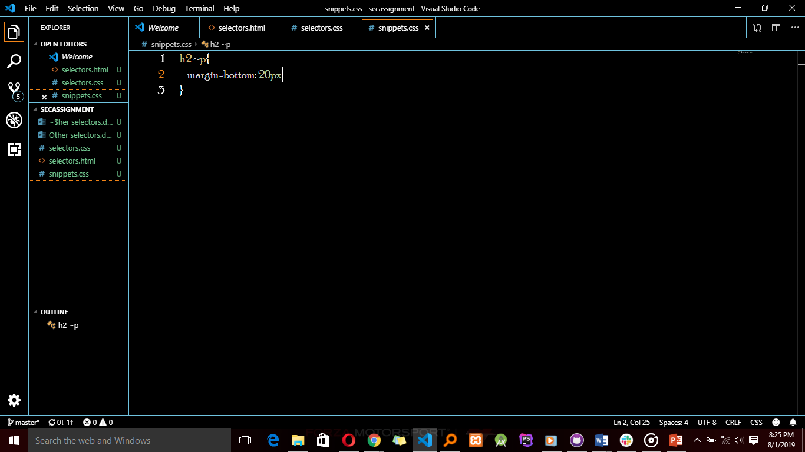
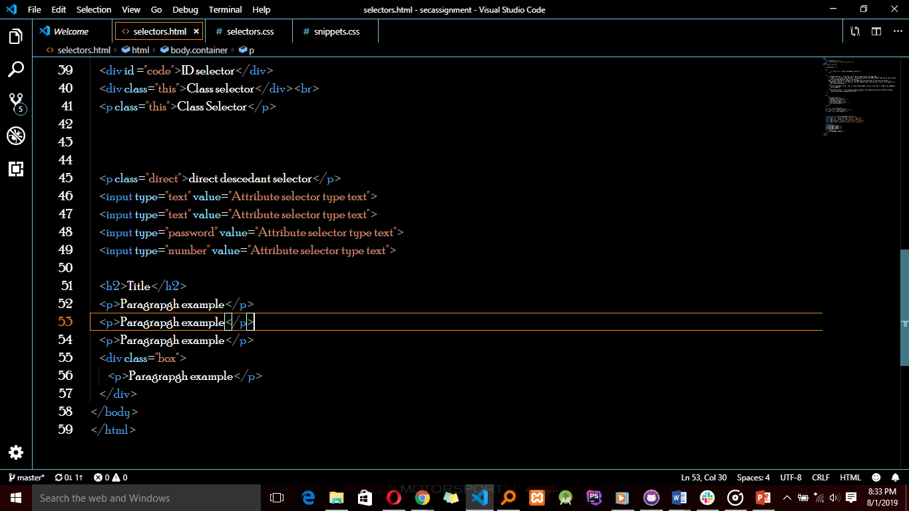

General sibling combinatory
This selector matches elements based on sibling relationships asin
selected elements are beside each other in the Html.
This selector is declared using the tilde (~) character.

HTML code is as shown

So all paragraphs who are siblings with h2 will be styled with
the margin-bottom code in this case, the first three
paragraphs and not the last paragraph because it is
in a div.
It also applies to the elements between the 'h2' and 'p'